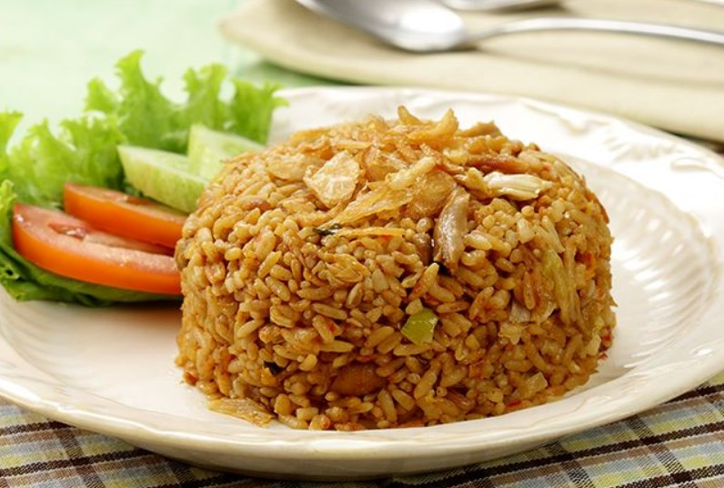

|  | HOME | PAKETAN | KONTAK |
NASI GORANG KANG JAWIR ADALAH NASI GORENG YANG DIBUAT SECARA TURUN MENURUN DARI TAHUN 1945 HINGGA SEKARANG, DAN JUGA MENGGUNAKAN RESEP TURUN MENURUN SEJAK TAHUN 1945
WALAUPUN NASI GORENG KANG JAWIR SUDAH SEUMURAN DENGAN INDONESIA, TETAPI RASANYA TETAP MENJADI JUARA LOHH
YUK COBAIN NASI GORENG KANG JAWIR, DIJAMIN DEH PASTI BAKAL NAMBAH MINIMAL 3 PIRING

NAHH NASI GORENG KANG JAWIR JUGA LAGI ADA PROMO NIH DARI 20.000 JADI 15.000 AJA LOH, LUMAYANKAN 5.000 BUAT PARKIR
MASIH MIKIR GIMANA RASANYA?, TENANG MAKANAN KITA SUDAH DIREVIEW OLEH SEORANG YOUTUBER JADI LANGSUNG TONTON SAJA VIDEONYA
KITA JUGA ADA PAKETAN BUAT PARA ANAK KOST
NASI GORENG AYAM + ES TEH HANYA 17.000
NASI GORENG TELUR + ES TEH HANYA 18.000
NASI GORENG + ES TEH HANYA 15.000
GIMANA PARA ANAK KOST, HARGANYA MURAH KAN, GASS BELI NASI GORENG KANG JAWIR DENGAN HUBUNGI NOMOR DIBAWAH INI
081218504882